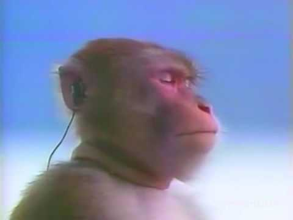

click here for jyrionous
songs
What is Jirology?
Click here to know more
do you know every jyrion?
- jirião
- jiriÃO
- xirião
- xereão
- gereão
- jirinão
- jiringão
- jirincão
- jirineu vc n sabe e nem eu
- jirinator
- jyrion
- djyrion unchained
- jirinadores: testa infinita
- jereão
- jirin gao
- jirin GAO
- djirião
- djirião livre
- jirião livre
- jirião ...LIVRE
- jiringadores
- type 10: the jirinator
- jirinada
- jirineia
- jiringônia
- jiriônico
- jirinoso
- jirinêutica
- jirologia
- girinão (girinão remix)
- show do jiringão
- jirião frifas
- jiringão frifas
- jirião fifas
- self master jyrion
- nepotismo jirial
- dijirinadores
Looking for problems to solve?
Graph Problems